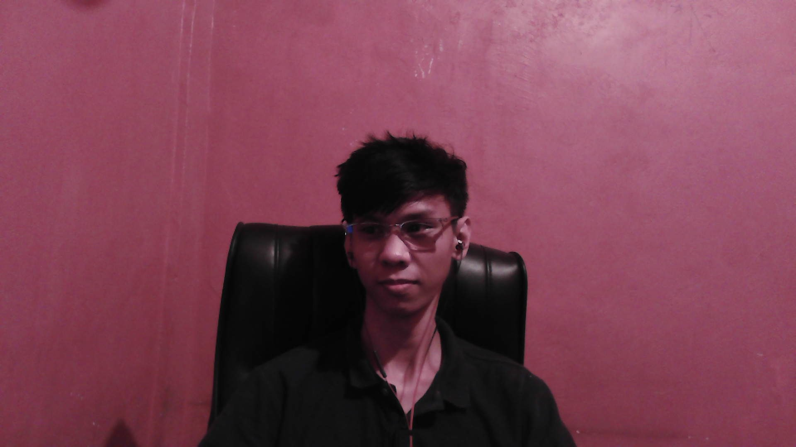

Hi! This blog is originally intended for cats, unfortunately, we only own dogs. I have avoided copyright by obtaining pictures that have been taken by my sister assuming she won't file a copyright strike in this page.
I can introduce myself since I have no access yet for copyright-free cats. My name is Joseph Angeles and I was a student from Polytechnic University of the Philippines and lasted for three years studying Bachelor of Science in Applied Mathematics. Due to the pandemic, it has been a struggle to continue studying both mentally and financially, and I have started a job as a Call Center Agent.

After being able to recover, I purchased a computer for myself so that I can study in my free time. I was considering on continuing my studies and starting over as a First Year College Student but since there's a possibility to be able to jump-start my career, I took on KodeGo to help me become what I had dreamed from the very start, becoming a Software Engineer.